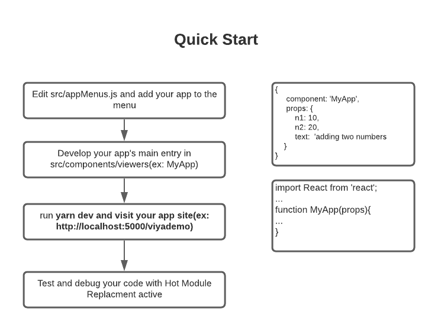

QuickStart template for Building SAS Viya Applications
One of the common patterns in SAS Viya Web Applications is shown in the 3 images below.
- After authentication the application starts with a landing page and a banner
- The user selects an application from the menu in the banner.
- The user is routed to the selected menu

The viya-app-quickstart template for create-react-app is designed to simplify the development of such applications. Once the local development environment has been setup, you can add new applications as shown in the diagram below:

Key features of viya-app-quickstart template
- Sets up an appserver using restaf-server
- Supports TLS
- Manages the authentication with SAS Viya
- Configured to run in docker
- Simplifies making REST API calls to SAS Viya using restaf
- Wired for routing using react-router
- Supports keeping sessions alive for longer periods
- Allows developers to use any react component library
- Developer can add new applications in 4 steps.
Creating the application using create-react-app
Issue these command
npx create-react-app <projectName> --template @sassoftware/viya-app-quickstart
ex:
npx create-react-app myapp --template @sassoftware/viya-app-quickstart
Configuration
Configure Viya
The required configurations are explained at this link.
The default clientId information is:
- Oauth flow: authorization_code
- clientid: viyaapp
- secret: secret
- redirect_uri: http://localhost:5000/viyaapp
Configure Application
Edit the .env file and set the following values:
VIYA_SERVER=your viya server url: ex: http://acme.viya.com
Build and Run the application
Build Application
Issue this command.
yarn buildapp
The buildapp script does essential housekeeping before running the standard start script of create-react-app. So use buildapp to build the application
Run the application
Issue this command
yarn app
At this point you should visit http://localhost:5000/viyaapp.
Default Applications
These are the default applications that you can access from the hamburger menu in the banner.
-
Run a casl program in Cas
-
Run a SAS program in spre
-
View the props these applications (and the new ones you will write) will have access to.
These are good examples for learning how to use restaf to make REST API calls to SAS Viya. Feel free to remove or update all the default components.
Running in development mode
To run the application in development mode with HMR enabled enter the following command:
yarn dev
Running in docker
To run the application in docker do the following:
-
Run this command to build the app: yarn buildapp
-
Edit docker-compose.yml file and set the VIYA_SERVER env variable.
-
Run this command : yarn compose
Adding and debugging your own applications
It is a simple process to get your application appearing in the application menu. This menu is acccessed via the hamburger menu in the application's banner. The default app takes care of all the routing and passing the correct props to your application's main component.

Step 1
Edit appMenus.js and add your application as a menu item. Your application will be displayed in the order it appears in the menu. The format of a menu item is:
Let us assume that your new component is called Mydemo.js
{
component: 'MyDemo',
hide: false, /* if not specified it defaults to false */
props : {
text: 'Total of two numbers',/* text used in the application menu */
n1: 10,
b2: 20
},
}
The component name must match the name of the component you will create in Step 2. The props are specific to your component. Typically these are configuration information to make your application work correctly.
The text will appear as the selection in the menu displayed by Home.js
At times you want to hide an application from users while you are working on it. Set hide to true in the menu. It defaults to false if not specified.
There are two sets of props your application will receive when selected from the menu.
Group 1 Props
-
All the prop that were passed to App.js in your index.js
-
This list is enhanced with the following:
- store -- restaf store object
- host -- your current SAS Viya url -- useful if you are using Viya VA SDK
- appName -- the name of your application
- appOptions -- this information is set in appenv.js in your root directory and the logonpayload. {appEnv: <info from appenv,.js>, logonPayload: < viya-server related information>} More on this later in this document
The content of appOptions is:
{
appEnv : <the object returned from appenv.js in the root directory. Used for passing application configuration information>
logonPayoad: < This has information related to logging on to Viya - used for implicit flow authentication >
}
These are accessed as usual:
let {store, host, appName,appOptions} = props;
Group 2 props
The props provided in the menu defintion are available thru history as follows:
import { useLocation } from 'react-router-dom';
<snip>
let location = useLocation();
let appProps = location.state;
appProps now has the props specified in the appMenu.js for this component
As an example the props for the "ComputeService" application item is defined in appMenu.js as shown below
{
component: 'ComputeService',
props: {
text: 'Import and Run SAS Program',
initialTab: 0,
tabs: [
{ label: 'ODS', component: 'ODS' },
{ label: 'Log', component: 'LogList' },
],
},
},
The value of appProps for this example is:
let appProps = {
text: 'Import and Run SAS Program',
initialTab: 0,
tabs: [
{ label: 'ODS', component: 'ODS' },
{ label: 'Log', component: 'LogList' },
],
};
Step 2
Develop your main app component in the viewers directory. You can use any react library. By default this project installs @material-ui.
import React from 'react';
import { useLocation } from 'react-router-dom';
function MyDemo(props) {
let {n1,n2,label} = useLocation().state;
let total = n1 + n2;
return <div>
<h1> {label} <h1>
<p> {total} </p>
</div>;
}
default export MyApp;
Notes
-
Everytime you change appMenus.js or add a new viewer you must restart the app with the commands below. But normal editing of existing application will do a hot replacement of the app.
-
Recommendation: Clone one of the default examples and modify the code to suit your needs.
-
Default styles for material-ui are specified in defaultStyles.json
Further Customization
You are also free to replace the Header.js and Home.js to suit your needs. Both of these components receive the appMenu as a prop - this allows you to display the menu as you see fit.
Project Organization
The src directory has 3 key sub-directories
-
viewers -- this directory has the main entry of the applications selectable in the menu
-
helpers -- this directory is designed to hold react components used by the viewers
-
lib -- this directory is for code that is not UI related: Example: code to access Viya, data manipulations etc...
yarn dev and yarn buildapp will scan the viewers and helpers directory and create the index.js in each of these directories. For every entry in viewers directory the application will create a route that can be referenced in the appMenu.js
TLS
You can enable TLS using one of the methods describe below. All these configurations are done in .env file (or docker-compose.yml file for docker)
###################################################
# tls support
##################################################
## If Viya has unsigned certificates
# NODE_TLS_REJECT_UNAUTHORIZED=0
# Option 1: Generate a self-signed certificate for the session
# TLS_CREATE=C:mcountry,ST:mystate,L:Cary,O:Myorg,OU:Mydept,CN:localhost
# Option 2: signed key and certificates
# TLS_KEY=../certs/self/key.pem
# TLS_CERT=../certs/self/certificate.pem
# Option 3: If you pfx form of certificate use this
# TLS_PFX=../certs/sascert/sascert2.pfx
# TLS_PW=rafdemo
# Optional ( can also be set in env)
# TLS_BUNDLE=../certs/self/ca-bundle.pem
Key libraries
The following key libraries are installed by default:
Confessions and Conclusion
A previous article titled Lazy-Programmer-s-Guide-to-SAS-Viya-Application-Development-Part II: create-react-restaf-viya-app. discussed developing web applications for SAS Viya using the create-react-restaf-viya-app.
In retropect that cli was not the best way to solve the problem of jump starting SAS Viya Applications. create-react-app supports an elegant solution using templates.
The viya-app-quickstart template is a standard use of the template capabilities of create-react-app making it easier to adopt and use.
Please feel free to clone the repository https://github.com/sassoftware/restaf/tree/2.0.0/packages/cra-template-viya-app-quickstart and modify it to suit your own needs.